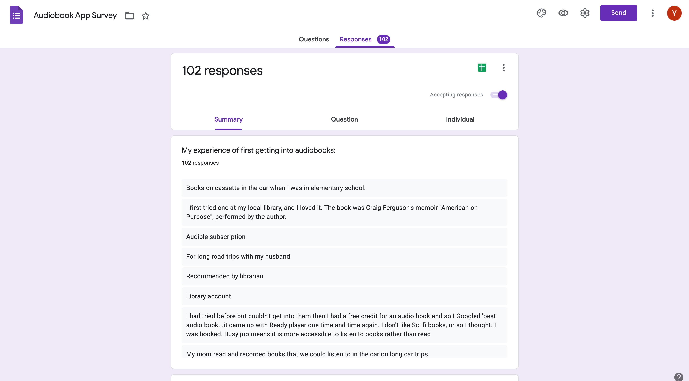
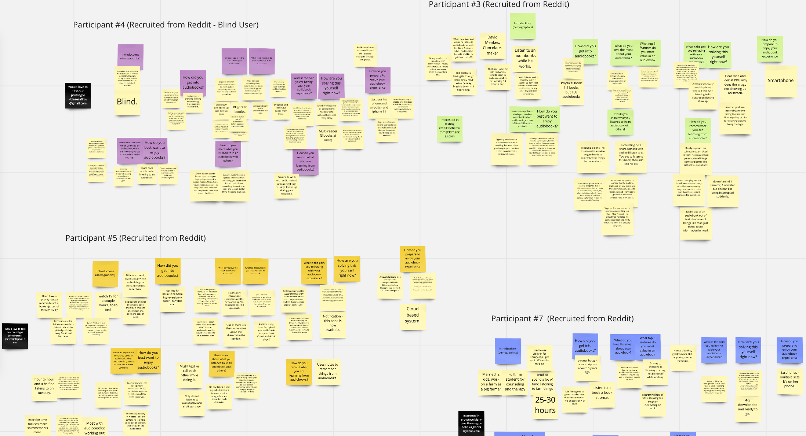
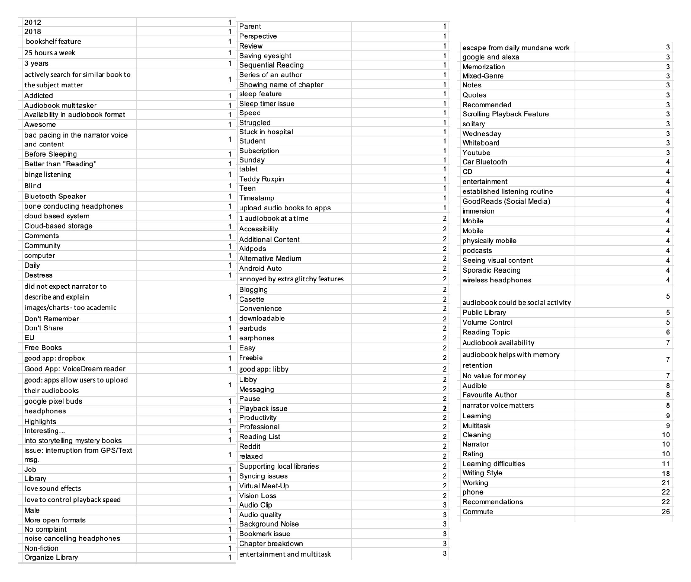
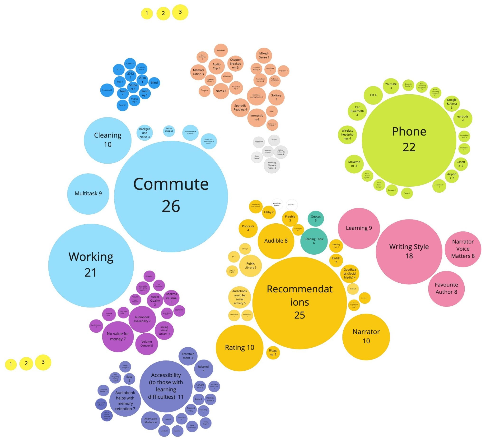

Step 1: Understanding our Persona (Using Surveys & Interviews)
In order to understand our persona, I drafted out a series of survey questions, as well as contacted individuals to schedule interviews.
All survey participants and interviewees were recruited online using Reddit, Facebook, and posting to forums such as the Librivox forums.
Questions generally ranged from how they first got into audiobooks, how they retained what they have listened to in audiobooks, what audiobook features they preferred, and their audiobook listening habits (including what sound system they used, and when they listened to in an audiobook.)
In total we received 102 survey responses & 10 interviews within a week.


After sorting out our interview and survey findings - we used an excel sheet to 'code' our findings into clusters of tags for qualitative analysis.
We then represented our findings visually using an affinity map, and what we found was interesting. We realized that the majority of users actually did not take notes at all in order to retain what they remembered, and instead 'shared' what they have learned with others via word of mouth in order to retain their information.
Through affinity mapping we realized there was a trend, in which audiobook listeners were more likely to listen to their audiobooks while on commute, as well as receive recommendations through word of mouth, and were most interested in recommendations for reading.
Thus, we decided to focus our app within this direction.

